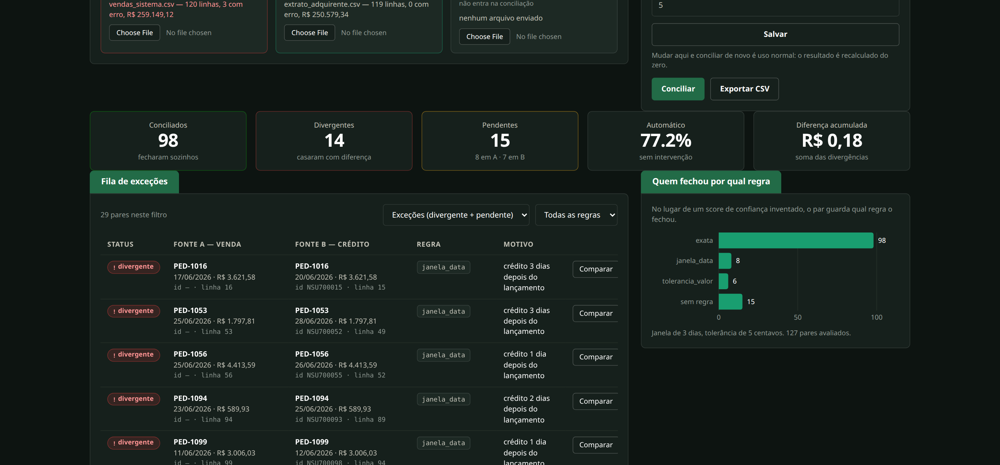

ConciliaFlow
Conciliação financeiraProblema: conciliar extrato bancário com o relatório de vendas era trabalho manual de planilha, com risco de erro e sem rastro do porquê de cada correspondência.
Solução: motor de conciliação com regras determinísticas em camadas (exata, por tolerância de valor e data, por agrupamento), fila de revisão assistida para o que não bate sozinho e exportação pronta para o Excel.
- 77,2%conciliado automaticamente no dataset demo
- 61testes automatizados
- Python
- FastAPI
- Pandas
- PostgreSQL
- Docker
- HTML/CSS/JS sem build